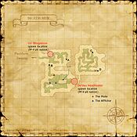
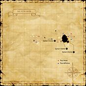

Description
Beadeaux is a dungeon in Derfland.
Map

Involved in Quests / Missions
| Quest / Mission | Type | Starter | Location |
|---|---|---|---|
| A Chocobo's Tale | General | Nevela | Upper Jeuno (G-7) |
| Beadeaux Smog | General | High Bear | Metalworks (I-8) |
| Blade of Darkness | Job: Dark Knight | Gumbah | Bastok Mines (J-7) |
| Blade of Evil | AF (DRK) | Zeid | Beadeaux (G-8) |
| Borghertz's Healing Hands | WHM AF | Guslam | Upper Jeuno (H-8) |
| Borghertz's Stalwart Hands | PLD AF | Guslam | Upper Jeuno (H-8) |
| Borghertz's Striking Hands | MNK AF | Guslam | Upper Jeuno (H-8) |
| Borghertz's Wild Hands | BST AF | Guslam | Upper Jeuno (H-8) |
| For the Birds | General | Koblakiq | Oldton Movalpolos (H-11) |
| Mysteries of Beadeaux I | General | Sattal-Mansal | Lower Jeuno (J-8) |
| Mysteries of Beadeaux II | General | Sattal-Mansal | Lower Jeuno (J-8) |
| The Curse Collector | General | Zon-Fobun | Bastok Markets (G-5) |
| The Rescue | Map | Thunder Hawk | Selbina (G-9) |
| The Tenshodo Showdown | AF (THF) | Nanaa Mihgo | Windurst Woods (J-3) |
| Whence Blows the Wind | Genkai 3 | Maat | Ru'Lude Gardens (H-5) |
NPCs
| Name | Location | Type |
|---|---|---|
| Haggleblix | pos=E-7 | Dynamis NPC |
| Ge'Fhu Yagudoeye | pos=G-10 | Quest NPC |
Notorious Monsters
| Name | Level | Drops | Steal | Family | Spawns | Notes |
|---|---|---|---|---|---|---|
| Bi'Gho Headtaker | 25 | Plantbane Power Crossbow Quadav Helm | — |  QuadavImage source QuadavImage source | — | A, L, H |
| Da'Dha Hundredmask | 30 | Mithran Scimitar Parrying Knife | — | QuadavImage source | — | Respawn: 90 min; A, L, H |
| De'Vyu Headhunter | 45 | Beadeaux Chest Key Quadav Charm | — | QuadavImage source | — | Spawned for a Mission; A, L, H |
| Ga'Bhu Unvanquished | 47-48 | Duel Rapier Valkyrie's Mask | — | QuadavImage source | — | A, L, H |
| Ge'Dha Evileye | 30 | Faerie Tunic Holy Phial Scroll of Deodorize Scroll of Invisible Scroll of Sneak | — | QuadavImage source | — | A, L, H |
| Go'Bhu Gascon | 41-42 | Quadav Augury Shell Beadeaux Chest Key | — | QuadavImage source | — | Respawn: 15 min For a Mission; A, L, H |
| Zo'Khu Blackcloud | 36-38 | Faerie Shield Marine Hat | — | QuadavImage source | — | A, L, H |
Regular Monsters


Event Monsters
| Name | Level | Drops | Steal | Family | Spawns | Notes |
|---|---|---|---|---|---|---|
| Magnes Quadav | 43-45 | — | — | QuadavImage source | 2 | Spawned Quest: For the Birds; A, L |
| Nickel Quadav | 43-45 | — | — | QuadavImage source | 2 | Spawned Quest: For the Birds; A, L, H |
Maps

Story walkthroughs in this area
| Story | Mission / quest |
|---|---|
| ToAU access | The Road to Aht Urhgan |
| WotG W-10 | Howl from the Heavens |
| ACP 2 | The Echo Awakens |
References
External references describe their own server or retail rules. Documented Zenith changes take precedence.
Map credits: Map 1 — HorizonXI Wiki · Map 2 — HorizonXI Wiki. Original game maps © SQUARE ENIX; redrawn maps retain the credited authorship and license.


Additional level-75 reference


Map Acquisition


|
Located deep within the Pashhow Marshlands, far from the reach of Bastokan and San d'Orian forces, the Quadav began building their main stronghold after their defeat in the Great War. To continue the construction of their city, they have relentlessly stolen large quantities of the non-rusting mythril from Bastok, as well as the techniques used by the republican craftsmen. |
Connecting Areas
- Pashhow Marshlands (through zoning and Escaping)
- Qulun Dome
Involved in Quests/Missions
|
Quest |
Type |
Starter |
Location |
| A Chocobo's Tale | General | Nevela | Upper Jeuno (G-7) |
| Beadeaux Smog | General | High Bear | Metalworks (I-8) |
| Blade of Darkness | Job | Gumbah | Bastok Mines (J-7) |
| Blade of Evil | AF (DRK) | Zeid | Beadeaux (G-8) |
| Borghertz's Healing Hands | AF (WHM) | Guslam | Upper Jeuno (H-8) |
| For the Birds | General | Koblakiq | Oldton Movalpolos (H-11) |
| Mysteries of Beadeaux I | General | Sattal-Mansal | Lower Jeuno (J-8) |
| Mysteries of Beadeaux II | General | Sattal-Mansal | Lower Jeuno (J-8) |
| The Curse Collector | General | Zon-Fobun | Bastok Markets (G-5) |
| The Rescue | Maps | Thunder Hawk | Selbina (G-9) |
| The Tenshodo Showdown | AF (THF) | Nanaa Mihgo | Windurst Woods (J-3) |
| Whence Blows the Wind | Genkai | Maat | Ru'Lude Gardens (H-5) |
| Mission | Country | Starter | Location |
|---|---|---|---|
| Magicite | All | Any Gate Guard | Home City |
| The Four Musketeers | Bastok | Bastok Gate Guard | Bastok |
Coffer/Chest Contents
|
NPCs Found Here
Weather
| |||||||||||||||||||||||
Notorious Monsters Found Here
| Name | Level | Drops | Steal | Family | Spawns | Notes |
|---|---|---|---|---|---|---|
| Bi'Gho Headtaker
|
25 | Plantbane Power Crossbow Quadav Helm |
Quadav | 1 | A, L, H | |
| Da'Dha Hundredmask
|
30 | Mithran Scimitar Parrying Knife |
Quadav | 1 Respawn: 90 min |
A, L, H | |
| De'Vyu Headhunter
|
45 | Beadeaux Chest Key Quadav Charm |
Quadav | 1 For a Mission |
A, L, H | |
| Ga'Bhu Unvanquished
|
47-48 | Duel Rapier Valkyrie's Mask |
Quadav | 1 | A, L, H | |
| Ge'Dha Evileye
|
30 | Faerie Tunic Holy Phial Scroll of Deodorize Scroll of Invisible Scroll of Sneak |
Quadav | 1 | A, L, H | |
| Go'Bhu Gascon
|
41-42 | Beadeaux Chest Key Quadav Augury Shell |
Quadav | 1 Respawn: 15 min For a Mission |
A, L, H | |
Magnes Quadav
|
43-45 | Quadav | 2 Spawned for a quest |
A, L | ||
Nickel Quadav
|
43-45 | Quadav | 2 Spawned for a quest |
A, L, H | ||
| Zo'Khu Blackcloud
|
36-38 | Faerie Shield Marine Hat |
Quadav | 1 | A, L, H |
|
HP = Detects Low HP; M = Detects Magic; Sc = Follows by Scent; T(S) = True-sight; T(H) = True-hearing JA = Detects job abilities; WS = Detects weaponskills; Z(D) = Asleep in Daytime; Z(N) = Asleep at Nighttime |
Mobs Found Here
|
HP = Detects Low HP; M = Detects Magic; Sc = Follows by Scent; T(S) = True-sight; T(H) = True-hearing JA = Detects job abilities; WS = Detects weaponskills; Z(D) = Asleep in Daytime; Z(N) = Asleep at Nighttime |
Adapted from Eden Wiki: Beadeaux · Contributors and history · CC BY-SA 4.0. Revision 45498. Layout, links and optional background text adapted for Zenith.